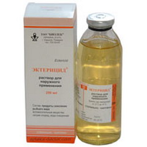
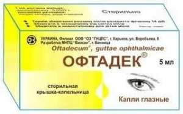
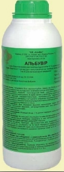

In August 1886, the Kharkov Medical Society took the decision to establish a Pasteur vaccination institute and a bacteriological station that were open on 20 April 1887. The first directors were appointed U. U. Motte and N. A. Protopopov. The institute's formation and growth was going on in conditions of struggling with epidemics of formidable infectious diseases.
Full History »FEMS is leading the way in promoting excellence and equality in science, and in channelling high quality knowledge to solving todays societal problems around microbiology. FEMS' vision is to coordinate and lead the acquisition of scientific knowledge and innovation in microbiology and to maximise communication of this knowledge, and its importance, to scientists, politicians, policy makers, industry and the general public.. .
Read More »